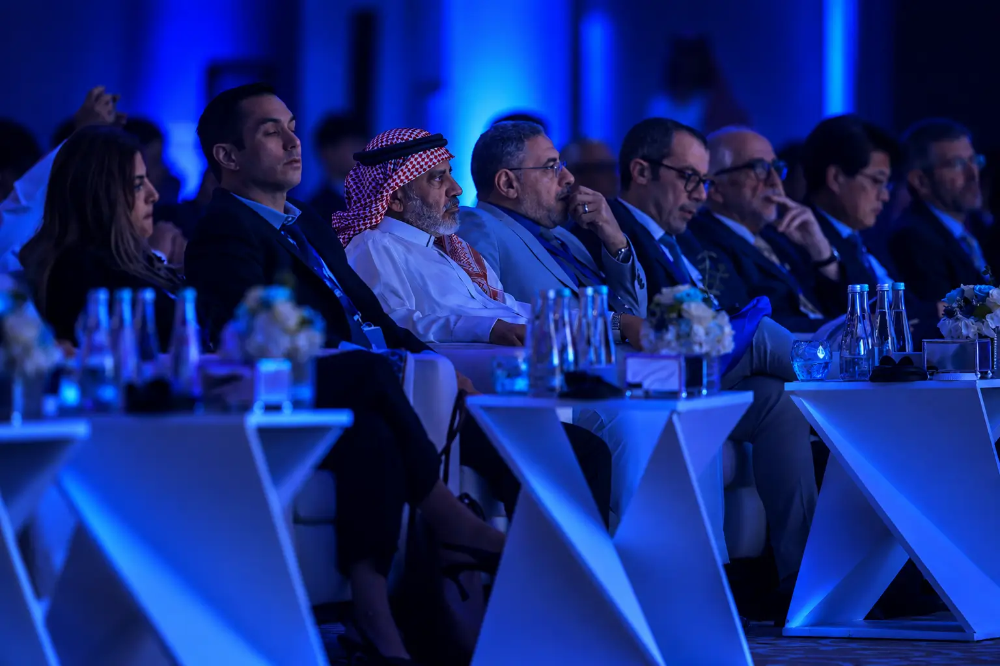
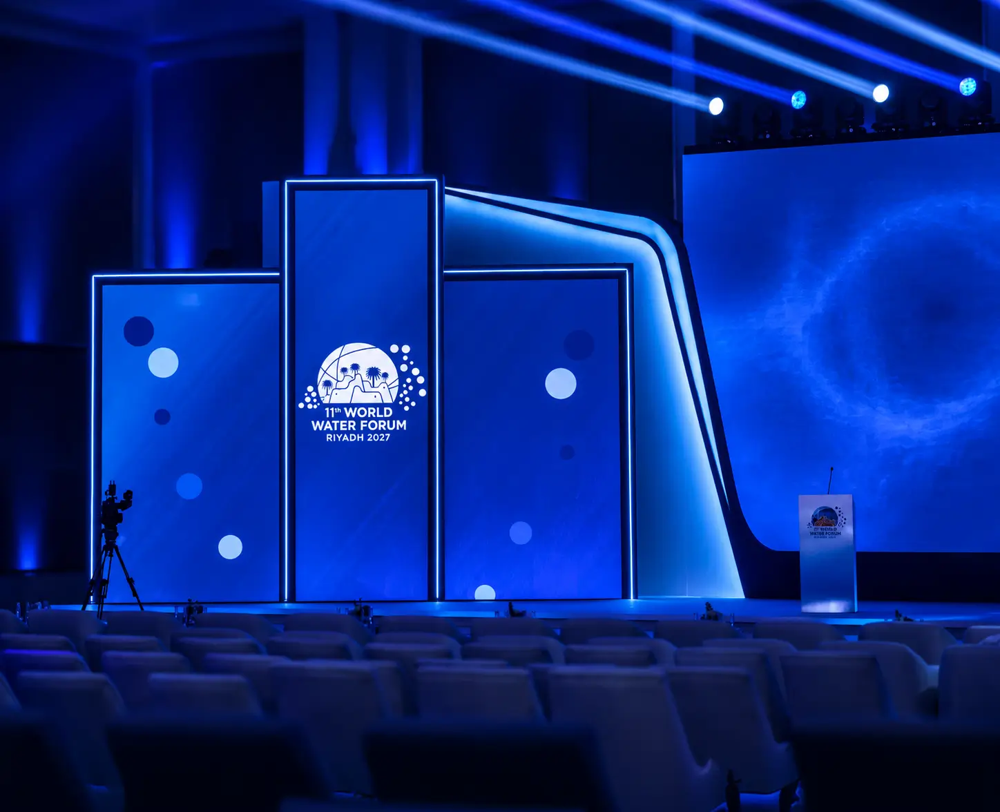
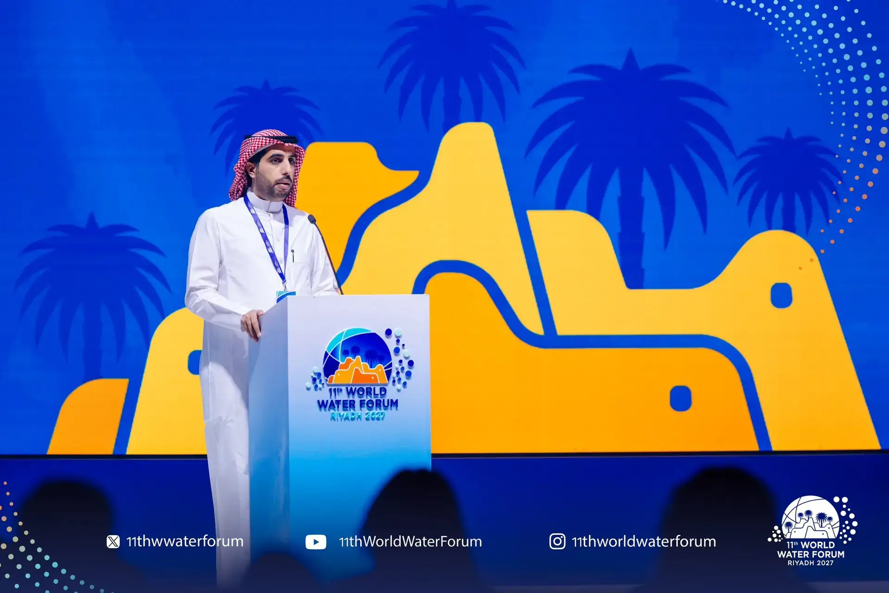
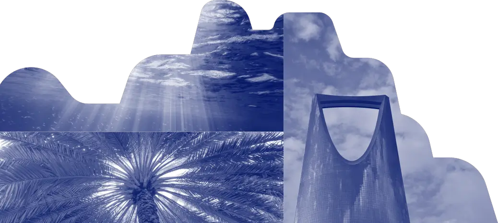
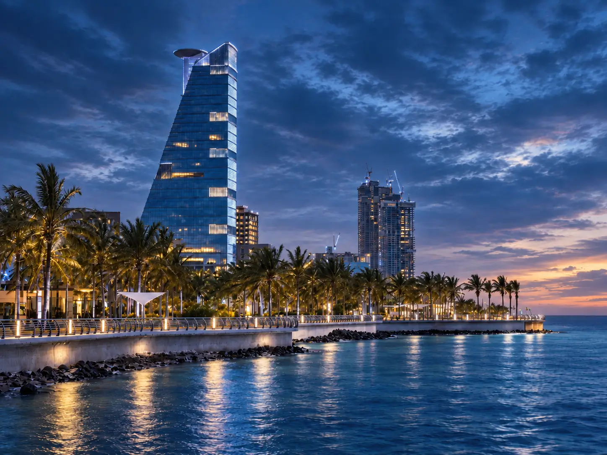
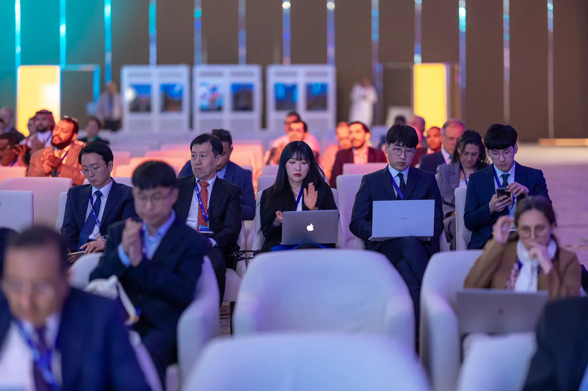
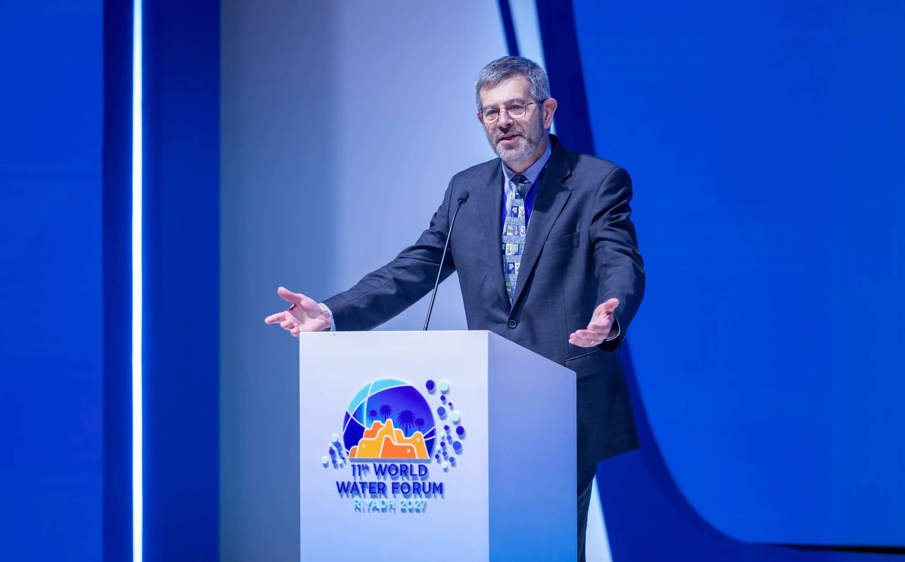
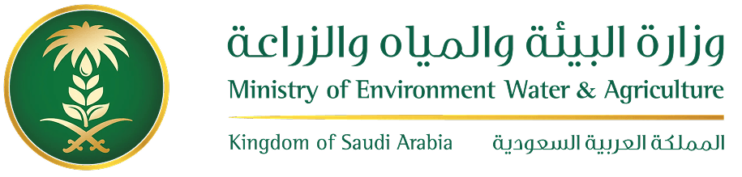
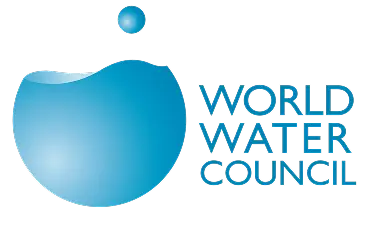

الطريق إلى الرياض
مسيرة المنتدى العالمي الحادي عشر للمياه نحو 2027
محطات رئيسية تجمع مجتمع المياه العالمي

الاجتماع التشاوري الثاني لأصحاب المصلحة

المنتدى العالمي الحادي عشر للمياه
الطريق إلى الرياض
المسارات والبرامج الرئيسية
تعرّف على المسارات والبرامج الرئيسية للمنتدى العالمي الحادي عشر للمياه
المسار السياسي
يضع أجندات السياسات والإعلانات والالتزامات بإشراك الوزراء والبرلمانيين والسلطات المحلية وسلطات الأحواض. ويربط مخرجات المنتدى بالأدوات السياسية والتمويلية، ويعزّز الدبلوماسية الشاملة والتنفيذ.
المسار الموضوعي
يحشد أصحاب المصلحة حول العالم لتصميم حلول عملية. ويقوم على ستة محاور – الأمن المائي؛ حوكمة المياه والدبلوماسية؛ المياه للإنسان والطبيعة؛ تمويل المياه؛ الابتكار في المياه؛ قيمة المياه. ويُنتج جلسات تجميعية وأوراق سياسات وخرائط طريق قابلة للتنفيذ.
المسار الإقليمي
يرسّخ رسالة المنتدى في السياقات الإقليمية ودون الإقليمية، ويطوّر خرائط طريق ملائمة محلياً وتعاوناً قائماً على الحالات بين المناطق. ويصل بين المجتمعات والسياسات العالمية لتحقيق أثر عملي.
برنامج التعاون بين القطاعات
برنامج المنتدى لتمكين القطاعات الاقتصادية المرتبطة بالمياه من التعاون واستعراض حلول الاستخدام المستدام للمياه بين الصناعات وداخلها. ويوفر البرنامج منصة لقادة الصناعة وجهات قطاع المياه والشركاء الدوليين لتبادل المعرفة وتوثيق أفضل الممارسات وتحديد إجراءات عملية يمكنها تحسين كفاءة المياه وإعادة استخدامها وموثوقيتها ومرونتها عبر القطاعات.
برنامج الشباب
يمكّن الشباب من الإسهام بفاعلية في صياغة المنتدى ومخرجاته، ويدمج رؤى الشباب والابتكار في مختلف مسارات المنتدى وأنشطته، مع إتاحة فرص للإسهام من خلال المشاركة الهادفة والتعاون والعمل عبر لجنة شباب المياه في الرياض (RWYC) ومشاركة الشباب على نطاق أوسع.

انضم إلى الحوار العالمي للمياه
يجمع المنتدى العالمي الحادي عشر للمياه الوزراء والمندوبين والخبراء الفنيين وأصحاب المصلحة لرسم مستقبل حوكمة المياه والعمل المائي عالمياً.
آخر المستجدات
عرض كل الأخبار
الأخبار
تابع أحدث الإعلانات والمستجدات والرؤى من المنتدى العالمي الحادي عشر للمياه

فتح التسجيل للاجتماع التشاوري الثاني في جدة
يسرّنا الإعلان عن فتح التسجيل في 15 ديسمبر 2025 للاجتماع التشاوري الثاني، الذي يُعقد يومي 8-9 أبريل 2026 في جدة، المملكة العربية السعودية.

الإعلان عن إطار المسار الموضوعي
يكشف المنتدى العالمي الحادي عشر للمياه عن إطاره الموضوعي الشامل الذي يغطي 6 محاور و30 موضوعاً تعالج تحديات المياه عالمياً.

شراكات استراتيجية مع كبرى المنظمات المائية
يعلن المنتدى عن شراكات استراتيجية مع كبرى المنظمات المائية الدولية لتعزيز التعاون وتبادل المعرفة.
الجهات المنظمة
يُنظّم المنتدى العالمي الحادي عشر للمياه بالشراكة بين مؤسسات رائدة في حوكمة المياه

وزارة البيئة والمياه والزراعة
تستضيف وزارة البيئة والمياه والزراعة في المملكة العربية السعودية المنتدى العالمي الحادي عشر للمياه وتقوده، بخبرة تمتد عقوداً في إدارة المياه وريادة إقليمية تدعم الأمن المائي العالمي.

المجلس العالمي للمياه
المجلس العالمي للمياه منظمة دولية تضم أصحاب مصلحة متعددين، ورسالتها حشد العمل في قضايا المياه الحرجة على جميع المستويات، بما فيها أعلى مستويات صنع القرار، عبر إشراك الناس في النقاش ومساءلة الأفكار السائدة.
ابقَ على تواصل
تابع المنتدى العالمي الحادي عشر للمياه على وسائل التواصل الاجتماعي للاطلاع على آخر الأخبار والمستجدات والإعلانات والفرص بينما نمضي نحو الرياض 2027